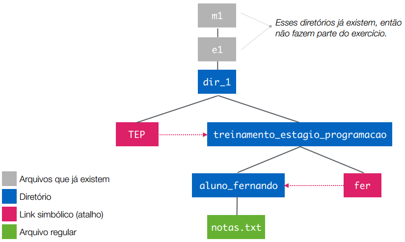
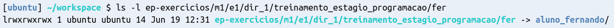

Em primeiro lugar, precisamos criar um diretório para resolver este exercício. Já que este passo irá se repetir para os outros exercícios do curso, podemos já definir uma convenção que servirá para todos os módulos e exercícios:
Vamos criar um diretório em ~/workspace/ep-exercicios. Para isso, execute o seguinte comando:
mkdir -p ~/workspace/ep-exercicios
Para cada módulo X (1, 2, 3, ...), vamos criar o diretório ~/workspace/ep-exercicios/mX. Por exemplo: se você está começando agora os exercícios do módulo 1, crie o diretório ~/workspace/ep-exercicios/m1 usando o seguinte comando:
mkdir -p ~/workspace/ep-exercicios/m1
Para cada exercício Y (1, 2, 3, ...), vamos criar o diretório ~/workspace/ep-exercicios/mX/eY. Por exemplo:
se você está começando agora os exercício 1 do módulo 1, crie o diretório ~/workspace/ep-exercicios/m1/e1
usando o seguinte comando:
mkdir -p ~/workspace/ep-exercicios/m1/e1
Depois deste passo, você deverá ter criado o diretório ~/workspace/ep-exercicios/m1/e1, o que pode ser verificado usando o comando ls.
Dentro do diretório do exercício (m1/e1), crie um arquivo de solução chamado m1-e1.sh. Lembre-se de que você pode criar arquivos pelo terminal usando o comando touch.
Abra o arquivo m1-e1.sh com o editor de texto de sua preferência.
Em seguida, adicione o seguinte conteúdo a este arquivo:
#!/usr/bin/env bash
# Este arquivo é um shell script vazio.
#
# A primeira linha deste arquivo (começando com "#!") é conhecida como 'shebang',
# e indica que o conteúdo deste arquivo deve ser interpretado pelo executável
# 'bash'. Se o arquivo contivesse comandos em Python, por exemplo, o shebang
# correto seria '#!/usr/bin/env python', e assim por diante para outras
# linguagens.
#
# Linhas que começam com '#' são apenas comentários.
# No restante deste arquivo, você pode escrever linhas de comando que serão
# executadas como se você as executasse diretamente no seu terminal.
Leia o conteúdo que foi adicionado ao arquivo com atenção.
Neste arquivo, escreva um shell script, isto é, uma sequência de comandos,
que cria os diretórios e arquivos mostrados na figura abaixo.

Dica 1: por exemplo, se o objetivo do seu shell script fosse simplesmente imprimir
a mensagem "Olá, mundo", ele poderia ser algo assim:
#!/usr/bin/env bash
echo "Olá, mundo"
Dica 2: cuidado com os caminhos utilizados no script! Neste exercício, utilize apenas caminhos absolutos para evitar possíveis problemas.
Teste o seu script. Para fazer isso:
Execute o seu script em um terminal. Para fazer isso, supondo que o seu script realmente seja um arquivo executável (veja a dica abaixo) simplesmente use o caminho até o script como se fosse o nome de um comando, como nos exemplos abaixo:
# Esta forma de executar o script funciona sempre, independentemente do seu
# diretório atual, porque o caminho é absoluto.
~/workspace/ep-exercícios/m1/e1/m1-e1.sh
# Esta outra forma usa um caminho relativo. Ela funciona se você passar
# o caminho relativo correto, como neste exemplo.
cd ~/workspace/ep-exercicios/m1/e1
./m1-e1.sh
Dica: certifique-se de que o arquivo é um executável, isto é, que o seu usuário tem
a permissão de execução para este arquivo (lembre-se do comando chmod).
Verifique se o seu script criou os arquivos e diretórios corretamente. Por exemplo: de
acordo com a figura, o diretório 'fer' deve ser um link simbólico para o diretório
'fernando'. Isso pode ser verificado com o comando ls:

Quando você estiver satisfeito com o seu script, utilize a ferramenta ep-cli
para executar a correção do exercício:
ep-cli corrigir --dir ~/workspace/ep-exercicios/m1/e1 --dicas 1.1
Quando você tiver finalizado o exercício, utilize a ferramenta ep-cli
para enviar o resultado.
ep-cli enviar 1.1